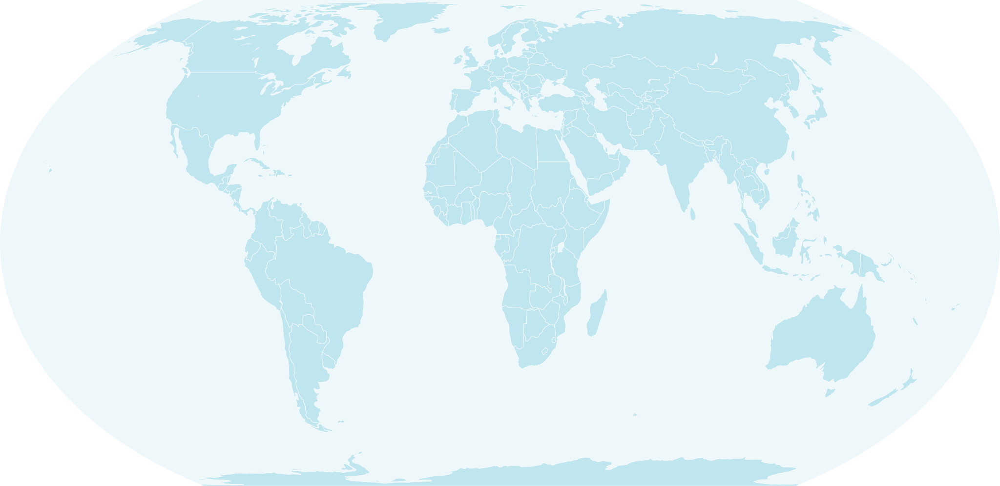

01
PhD Candidate
TU Delft · FUSE Lab & SERGAutomated code refactoring and coding agents
PhD Candidate · TU Delft
I research how AI can understand, improve, and refactor software.
PhD candidate in the FUSE Lab and Software Engineering Research Group at Delft University of Technology.
Delft, the Netherlands · 2026
About
I am a PhD candidate in the FUSE Lab and Software Engineering Research Group (SERG) at Delft University of Technology. I study how language models and coding agents can make software refactoring more autonomous, verifiable, and useful to developers.
Automated code refactoring and coding agents
Thesis: CoReFusion
Research
My work connects generative models with concrete software maintenance tasks, with an emphasis on refactoring quality, evaluation, and developer control.
Selected work
Refactoring as Denoising?
Team TUDelft Dfusion
LLM Error Taxonomy Study
Multilingual Code Evaluation
Grammar-Based LLM Analysis
In this paper, we propose an intelligent trigger model that combines rule-based filtering with deep learning on telemetry and code context data to efficiently decide when to invoke a large language model for code completion, reducing unnecessary computations while enhancing developer productivity.
Publications
Academic service
Projects
A lightweight, collaborative architecture-design platform with Git-inspired version control for distributed teams.
An efficient semantic-segmentation system built for a Jetson Nano under a five-watt power budget.
A tool for measuring the energy footprint of language-model workloads across CPU, GPU, and memory usage.
Visitors

Live locations are off by default.
Contact
For research conversations, collaborations, or seminar ideas, email is the most direct route.